Candidate List 20260324 Previous Day Next Day Section 1: New Sources (age<1d) Cosmological Afterglow
Section 2: Old (1-5d) sources observed last night placeholder
Section 1: New Afterglow/FBOT Cands Last Night (6)
1. ZTF26aaozxsp (Afterglow?) [Back to Top] [Share] [Trigger Swift] [Fritz ] [Lasair ]RA, Dec: 105.13925, 72.8347 7h 0m33.42s, 72d50m4.93sGalactic (l, b): 142.17052, 26.49511 ext(g-r) = 0.118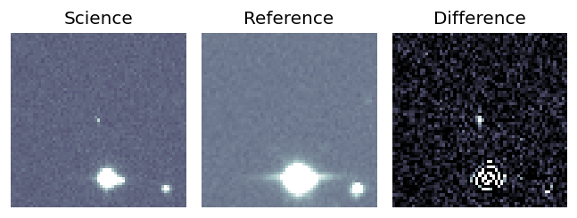
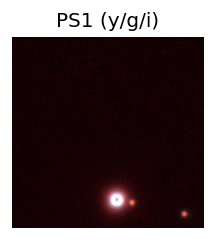
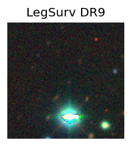
LegacySurvey: 1 sources in 3 arcsec Closest: d = 2.35 arcsec, 235.8 deg (east of north) photoz=0.66 (68% bounds 0.45, 0.9), type=REX peak abs mag = -23.5 (68% bounds -22.46, -24.31) 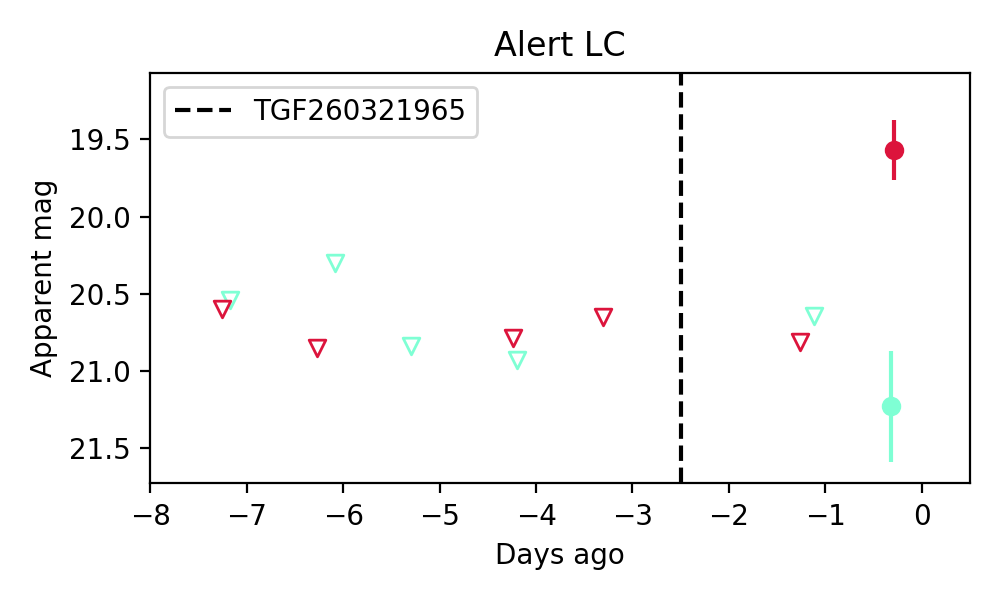
Consistent with synchrotron, g-r>0!
2. ZTF26aapdyqj (Afterglow?) [Back to Top] [Share] [Trigger Swift] [Fritz ] [Lasair ]RA, Dec: 136.41617, 15.42542 9h 5m39.88s, 15d25m31.52sGalactic (l, b): 213.37758, 36.54931 WARNING: -1.16 deg from ecliptic plane ext(g-r) = 0.047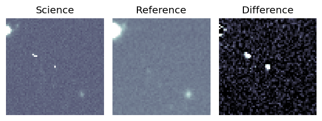
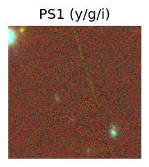
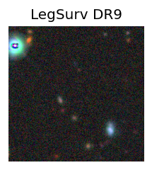
peak abs mag = -23.46 LegacySurvey: 1 sources in 3 arcsec Closest: d = 8.80 arcsec, 112.6 deg (east of north) photoz=0.31 (68% bounds 0.26, 0.41), type=EXP peak abs mag = -22.56 (68% bounds -22.06, -23.23) 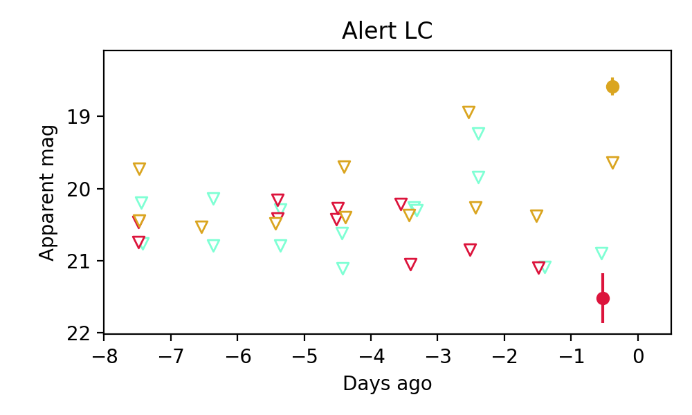
Consistent with synchrotron, g-r>0!
3. ZTF26aapgqen (FBOT?) [Back to Top] [Share] [Trigger Swift] [Fritz ] [Lasair ]RA, Dec: 198.96231, 19.72382 13h15m50.96s, 19d43m25.74sGalactic (l, b): 341.29321, 80.72043 ext(g-r) = 0.022peak abs mag = -17.16 LegacySurvey: 1 sources in 3 arcsec Closest: d = 1.34 arcsec, 281.5 deg (east of north) photoz=0.34 (68% bounds 0.07, 1.21), type=PSF peak abs mag = -21.41 (68% bounds -17.53, -24.76)
4. ZTF26aapgvkd (FBOT?) [Back to Top] [Share] [Trigger Swift] [Fritz ] [Lasair ]RA, Dec: 231.2836, 13.34003 15h25m8.06s, 13d20m24.10sGalactic (l, b): 19.69478, 51.59515 ext(g-r) = 0.051peak abs mag = -23.14 LegacySurvey: 1 sources in 3 arcsec Closest: d = 0.19 arcsec, 50.2 deg (east of north) photoz=0.12 (68% bounds 0.07, 0.39), type=EXP peak abs mag = -19.64 (68% bounds -18.53, -22.5)
5. ZTF26aapjbbf (Afterglow?) [Back to Top] [Share] [Trigger Swift] [Fritz ] [Lasair ]RA, Dec: 225.63902, -1.4217 15h 2m33.37s, -1d-25m-18.11sGalactic (l, b): 356.10235, 47.45298 ext(g-r) = 0.08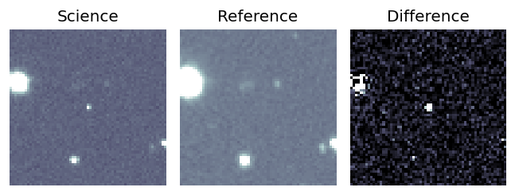
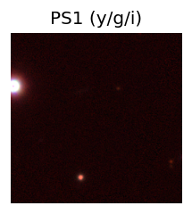
LegacySurvey: 1 sources in 3 arcsec Closest: d = 3.73 arcsec, 214.4 deg (east of north) photoz=0.92 (68% bounds 0.68, 1.17), type=REX peak abs mag = -25.45 (68% bounds -24.66, -26.09) 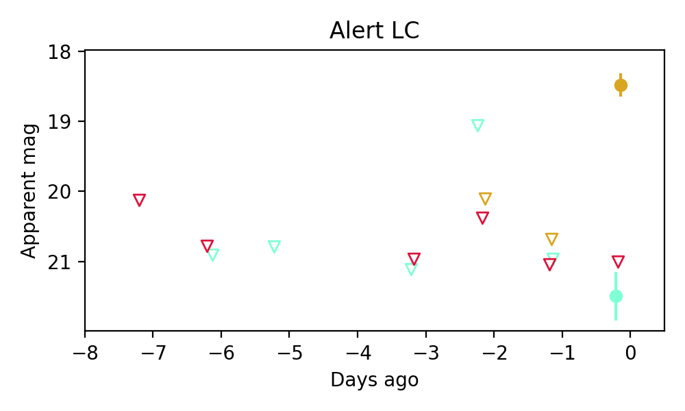
Consistent with synchrotron, g-r>0!
6. ZTF26aapjfyn (Afterglow?) [Back to Top] [Share] [Trigger Swift] [Fritz ] [Lasair ]RA, Dec: 258.6891, 11.38003 17h14m45.38s, 11d22m48.11sGalactic (l, b): 32.45635, 26.56516 ext(g-r) = 0.216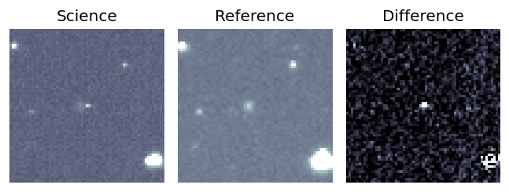
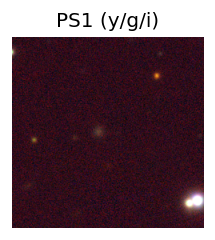
LegacySurvey: 1 sources in 3 arcsec Closest: d = 2.85 arcsec, 256.3 deg (east of north) photoz=0.9 (68% bounds 0.78, 0.99), type=REX peak abs mag = -24.48 (68% bounds -24.12, -24.75) 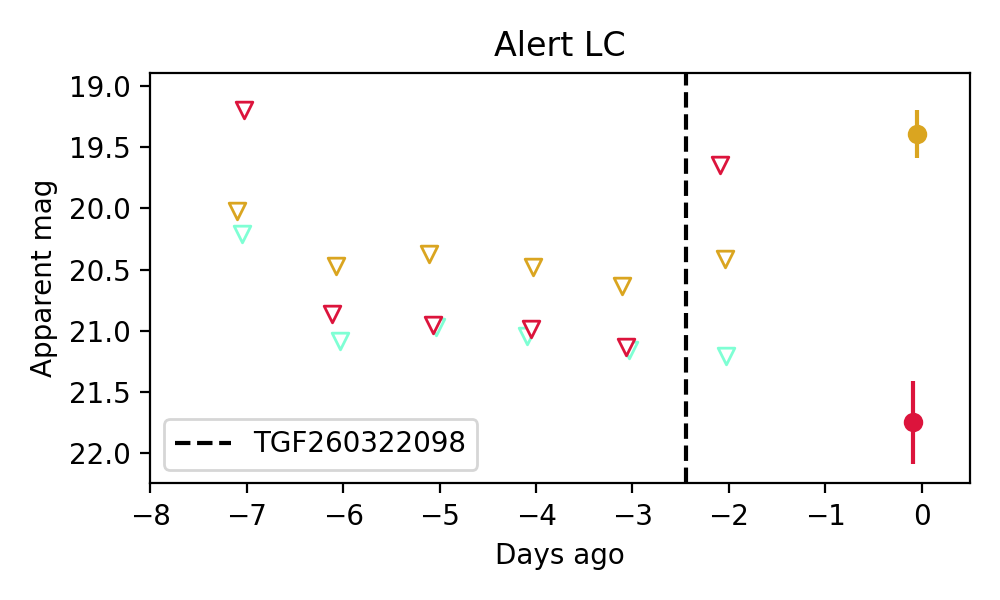
Consistent with synchrotron, g-r>0!
Section 2: Older Sources Observed Last Night (30)
0. ZTF26aamitpu (Afterglow?) [Back to Top] [Share] [Trigger Swift] [Fritz ] [Lasair ]RA, Dec: 212.99223, 55.40955 14h11m58.14s, 55d24m34.38sGalactic (l, b): 101.17538, 58.18557 ext(g-r) = 0.017peak abs mag = -19.43 LegacySurvey: 1 sources in 3 arcsec Closest: d = 1.18 arcsec, 307.0 deg (east of north) photoz=0.04 (68% bounds 0.04, 0.04), type=SER peak abs mag = -18.98 (68% bounds -18.79, -19.2)
1. ZTF26aamqibe (FBOT?) [Back to Top] [Share] [Trigger Swift] [Fritz ] [Lasair ]RA, Dec: 170.82966, 34.37731 11h23m19.12s, 34d22m38.33sGalactic (l, b): 186.53409, 69.78081 ext(g-r) = 0.026peak abs mag = -20.53 LegacySurvey: 1 sources in 3 arcsec Closest: d = 0.86 arcsec, 53.7 deg (east of north) photoz=0.89 (68% bounds 0.58, 1.15), type=REX peak abs mag = -26.27 (68% bounds -25.16, -26.96)
2. ZTF26aamqluf (Afterglow?FBOT?) [Back to Top] [Share] [Trigger Swift] [Fritz ] [Lasair ]RA, Dec: 183.74219, 63.7879 12h14m58.13s, 63d47m16.42sGalactic (l, b): 129.58969, 52.86639 ext(g-r) = 0.022peak abs mag = -20.46 LegacySurvey: 1 sources in 3 arcsec Closest: d = 5.62 arcsec, 141.9 deg (east of north) photoz=0.02 (68% bounds 0.01, 0.05), type=PSF peak abs mag = -20.36 (68% bounds -17.88, -22.38) Consistent with synchrotron, g-r>0!
3. ZTF26aamsxxm (Afterglow?) [Back to Top] [Share] [Trigger Swift] [Fritz ] [Lasair ]RA, Dec: 157.30472, 8.49369 10h29m13.13s, 8d29m37.29sGalactic (l, b): 235.19634, 51.57907 WARNING: -0.93 deg from ecliptic plane ext(g-r) = 0.037peak abs mag = -18.52 LegacySurvey: 1 sources in 3 arcsec Closest: d = 0.36 arcsec, 145.7 deg (east of north) photoz=0.11 (68% bounds 0.08, 0.13), type=SER peak abs mag = -18.75 (68% bounds -18.2, -19.26)
4. ZTF26aancnlw (FBOT?) [Back to Top] [Share] [Trigger Swift] [Fritz ] [Lasair ]RA, Dec: 161.53961, -4.01597 10h46m9.51s, -4d 0m-57.51sGalactic (l, b): 253.94146, 46.59346 ext(g-r) = 0.052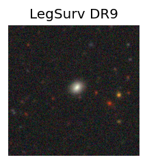
LegacySurvey: 1 sources in 3 arcsec Closest: d = 2.25 arcsec, 310.2 deg (east of north) photoz=0.12 (68% bounds 0.09, 0.14), type=SER peak abs mag = -19.77 (68% bounds -19.16, -20.11) Consistent with synchrotron, g-r>0!
5. ZTF26aanfqhc (Afterglow?) [Back to Top] [Share] [Trigger Swift] [Fritz ] [Lasair ]RA, Dec: 236.66946, 12.14797 15h46m40.67s, 12d 8m52.69sGalactic (l, b): 21.69954, 46.37118 ext(g-r) = 0.062peak abs mag = -18.27 LegacySurvey: 1 sources in 3 arcsec Closest: d = 5.80 arcsec, 318.3 deg (east of north) photoz=0.03 (68% bounds 0.03, 0.04), type=SER peak abs mag = -17.34 (68% bounds -16.95, -17.82) Consistent with synchrotron, g-r>0!
6. ZTF26aanlofr (FBOT?) [Back to Top] [Share] [Trigger Swift] [Fritz ] [Lasair ]RA, Dec: 128.65865, 20.3041 8h34m38.08s, 20d18m14.76sGalactic (l, b): 204.6635, 31.43285 WARNING: 1.55 deg from ecliptic plane ext(g-r) = 0.035peak abs mag = -19.55 LegacySurvey: 1 sources in 3 arcsec Closest: d = 0.47 arcsec, 178.5 deg (east of north) photoz=0.17 (68% bounds 0.14, 0.23), type=REX peak abs mag = -19.98 (68% bounds -19.52, -20.77) Consistent with synchrotron, g-r>0!
7. ZTF26aanqytv (Afterglow?) [Back to Top] [Share] [Trigger Swift] [Fritz ] [Lasair ]RA, Dec: 183.92993, 36.32041 12h15m43.18s, 36d19m13.47sGalactic (l, b): 160.22691, 78.08837 ext(g-r) = 0.023LegacySurvey: 1 sources in 3 arcsec Closest: d = 6.87 arcsec, 46.7 deg (east of north) photoz=0.0 (68% bounds 0.0, 0.04), type=PSF peak abs mag = -11.52 (68% bounds -10.76, -17.02) Consistent with synchrotron, g-r>0!
8. ZTF26aansxjk (FBOT?) [Back to Top] [Share] [Trigger Swift] [Fritz ] [Lasair ]RA, Dec: 182.7643, 42.04388 12h11m3.43s, 42d 2m37.96sGalactic (l, b): 149.29626, 72.9547 ext(g-r) = 0.015peak abs mag = -20.48 LegacySurvey: 1 sources in 3 arcsec Closest: d = 0.63 arcsec, 273.1 deg (east of north) photoz=0.17 (68% bounds 0.1, 0.29), type=EXP peak abs mag = -20.57 (68% bounds -19.18, -21.82) Consistent with synchrotron, g-r>0!
9. ZTF26aansykv (Afterglow?) [Back to Top] [Share] [Trigger Swift] [Fritz ] [Lasair ]RA, Dec: 233.95323, 37.94259 15h35m48.78s, 37d56m33.31sGalactic (l, b): 60.98392, 54.02998 ext(g-r) = 0.016LegacySurvey: 1 sources in 3 arcsec Closest: d = 2.85 arcsec, 353.5 deg (east of north) photoz=0.71 (68% bounds 0.37, 1.05), type=REX peak abs mag = -23.21 (68% bounds -21.51, -24.26) Consistent with synchrotron, g-r>0!
10. ZTF26aaodgsa (Afterglow?FBOT?) [Back to Top] [Share] [Trigger Swift] [Fritz ] [Lasair ]RA, Dec: 172.04538, 25.6567 11h28m10.89s, 25d39m24.12sGalactic (l, b): 212.72735, 71.31866 ext(g-r) = 0.023LegacySurvey: 1 sources in 3 arcsec Closest: d = 0.81 arcsec, 310.8 deg (east of north) photoz=0.07 (68% bounds 0.03, 0.08), type=REX peak abs mag = -19.79 (68% bounds -18.33, -20.12) Consistent with synchrotron, g-r>0!
11. ZTF26aaoswhj (Afterglow?FBOT?) [Back to Top] [Share] [Trigger Swift] [Fritz ] [Lasair ]RA, Dec: 129.15194, 17.73381 8h36m36.47s, 17d44m1.72sGalactic (l, b): 207.6661, 30.95608 WARNING: -0.82 deg from ecliptic plane ext(g-r) = 0.038peak abs mag = -19.73 LegacySurvey: 1 sources in 3 arcsec Closest: d = 0.76 arcsec, 163.3 deg (east of north) photoz=0.1 (68% bounds 0.08, 0.12), type=SER peak abs mag = -18.28 (68% bounds -17.93, -18.75) Consistent with synchrotron, g-r>0!
12. ZTF26aaosxyg (Afterglow?) [Back to Top] [Share] [Trigger Swift] [Fritz ] [Lasair ]RA, Dec: 147.38862, -2.73509 9h49m33.27s, -2d-44m-6.34sGalactic (l, b): 239.87117, 36.98844 ext(g-r) = 0.037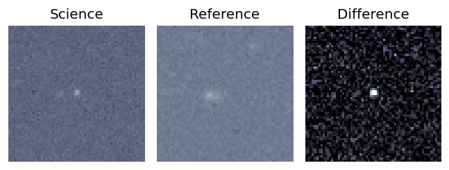
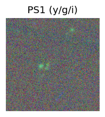
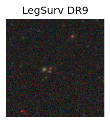
peak abs mag = -23.37 LegacySurvey: 1 sources in 3 arcsec Closest: d = 0.39 arcsec, 197.6 deg (east of north) photoz=1.01 (68% bounds 0.68, 1.24), type=PSF peak abs mag = -24.86 (68% bounds -23.79, -25.41) 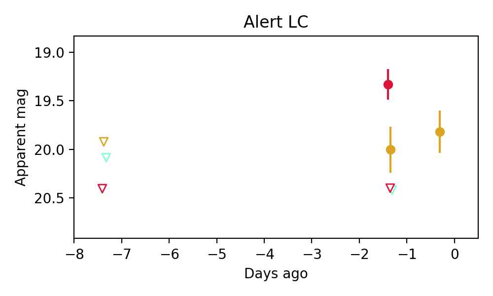
13. ZTF26aaotmuq (Afterglow?) [Back to Top] [Share] [Trigger Swift] [Fritz ] [Lasair ]RA, Dec: 162.37447, 21.77828 10h49m29.87s, 21d46m41.79sGalactic (l, b): 217.14499, 61.81105 ext(g-r) = 0.023LegacySurvey: 1 sources in 3 arcsec Closest: d = 6.69 arcsec, 350.4 deg (east of north) photoz=0.34 (68% bounds 0.21, 0.66), type=REX peak abs mag = -21.94 (68% bounds -20.68, -23.63) Consistent with synchrotron, g-r>0!
14. ZTF26aaovlst (FBOT?) [Back to Top] [Share] [Trigger Swift] [Fritz ] [Lasair ]RA, Dec: 186.60897, 8.3937 12h26m26.15s, 8d23m37.31sGalactic (l, b): 284.24769, 70.35314 ext(g-r) = 0.023peak abs mag = -22.56 LegacySurvey: 1 sources in 3 arcsec Closest: d = 0.12 arcsec, 167.5 deg (east of north) photoz=0.08 (68% bounds 0.03, 0.19), type=DEV peak abs mag = -17.65 (68% bounds -15.45, -19.79)
15. ZTF26aaovyba (FBOT?) [Back to Top] [Share] [Trigger Swift] [Fritz ] [Lasair ]RA, Dec: 207.54594, 12.48985 13h50m11.02s, 12d29m23.45sGalactic (l, b): 349.03558, 69.90933 ext(g-r) = 0.031peak abs mag = -19.66 LegacySurvey: 1 sources in 3 arcsec Closest: d = 0.99 arcsec, 123.2 deg (east of north) photoz=0.08 (68% bounds 0.07, 0.1), type=SER peak abs mag = -18.88 (68% bounds -18.42, -19.29)
16. ZTF26aaoxjdq (Afterglow?) [Back to Top] [Share] [Trigger Swift] [Fritz ] [Lasair ]RA, Dec: 230.36791, 15.77987 15h21m28.30s, 15d46m47.54sGalactic (l, b): 22.67202, 53.45506 ext(g-r) = 0.038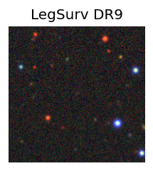
LegacySurvey: 1 sources in 3 arcsec Closest: d = 0.41 arcsec, 321.7 deg (east of north) photoz=0.75 (68% bounds 0.49, 0.99), type=REX peak abs mag = -23.41 (68% bounds -22.3, -24.15)
17. ZTF26aaozsct (Afterglow?) [Back to Top] [Share] [Trigger Swift] [Fritz ] [Lasair ]RA, Dec: 126.1307, 11.3856 8h24m31.37s, 11d23m8.16sGalactic (l, b): 212.99003, 25.76727 ext(g-r) = 0.048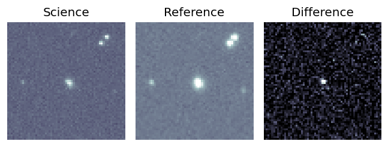
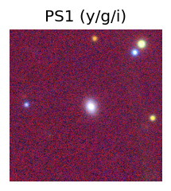
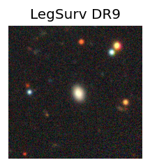
peak abs mag = -18.06 LegacySurvey: 1 sources in 3 arcsec Closest: d = 1.92 arcsec, 245.1 deg (east of north) photoz=0.1 (68% bounds 0.07, 0.13), type=SER peak abs mag = -18.37 (68% bounds -17.68, -19.0) 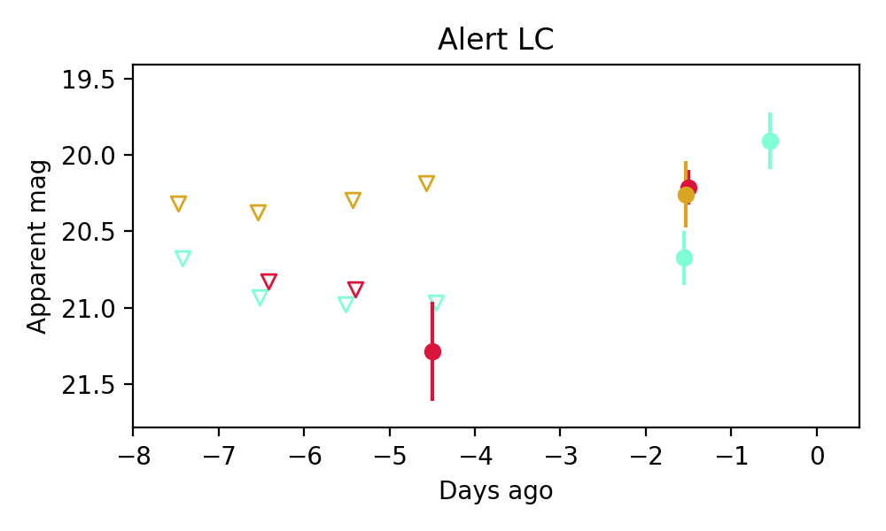
Consistent with synchrotron, g-r>0!
18. ZTF26aaozsfe (FBOT?) [Back to Top] [Share] [Trigger Swift] [Fritz ] [Lasair ]RA, Dec: 136.52635, 18.31154 9h 6m6.32s, 18d18m41.55sGalactic (l, b): 210.05991, 37.70933 WARNING: 1.63 deg from ecliptic plane ext(g-r) = 0.039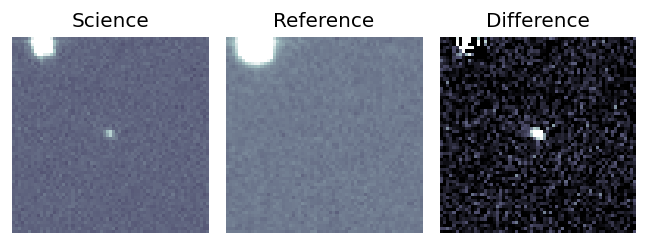
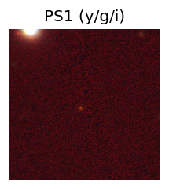
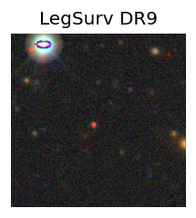
LegacySurvey: 1 sources in 3 arcsec Closest: d = 2.64 arcsec, 136.2 deg (east of north) photoz=0.21 (68% bounds 0.12, 0.39), type=PSF peak abs mag = -21.18 (68% bounds -19.78, -22.75) 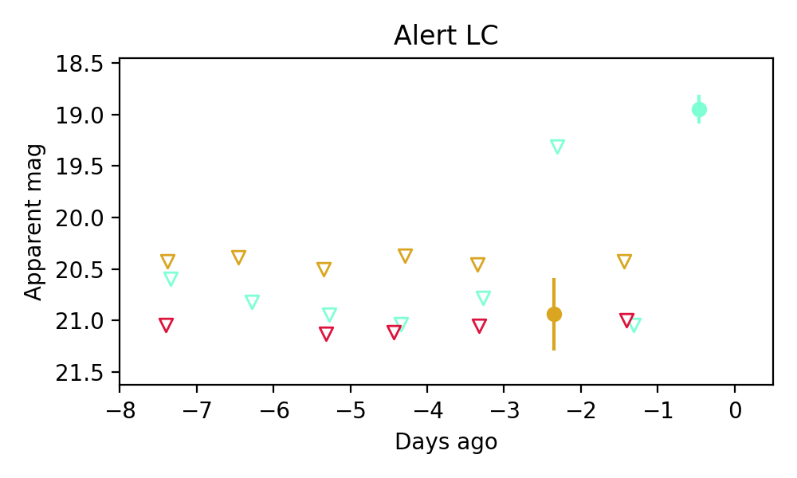
19. ZTF26aapadbd (FBOT?) [Back to Top] [Share] [Trigger Swift] [Fritz ] [Lasair ]RA, Dec: 107.72787, -3.93752 7h10m54.69s, -3d-56m-15.09sGalactic (l, b): 218.66061, 2.52417 ext(g-r) = 0.327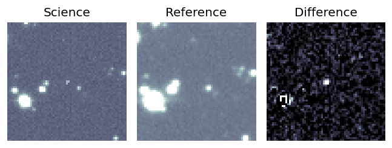
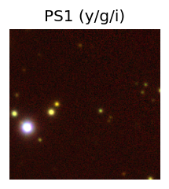
PS1: 1 source in 3 arcsec Closest: d = 5.30 arcsec photoz=0.65+/-0.24 peak abs mag = -24.14 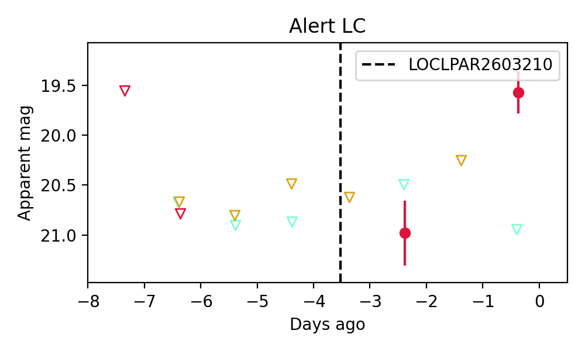
20. ZTF26aapaocg (Afterglow?) [Back to Top] [Share] [Trigger Swift] [Fritz ] [Lasair ]RA, Dec: 125.36728, 33.04112 8h21m28.15s, 33d 2m28.02sGalactic (l, b): 189.29504, 32.29097 ext(g-r) = 0.052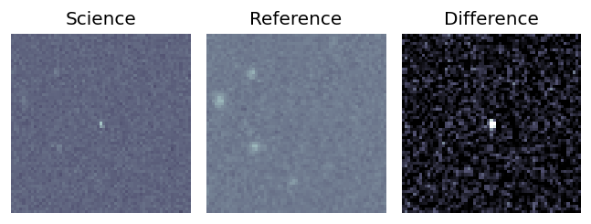
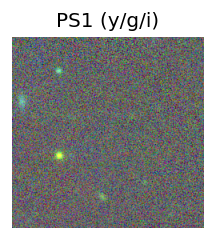
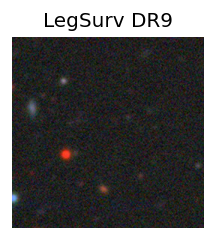
LegacySurvey: 1 sources in 3 arcsec Closest: d = 9.01 arcsec, 305.8 deg (east of north) photoz=0.82 (68% bounds 0.58, 1.06), type=REX peak abs mag = -23.51 (68% bounds -22.61, -24.2) 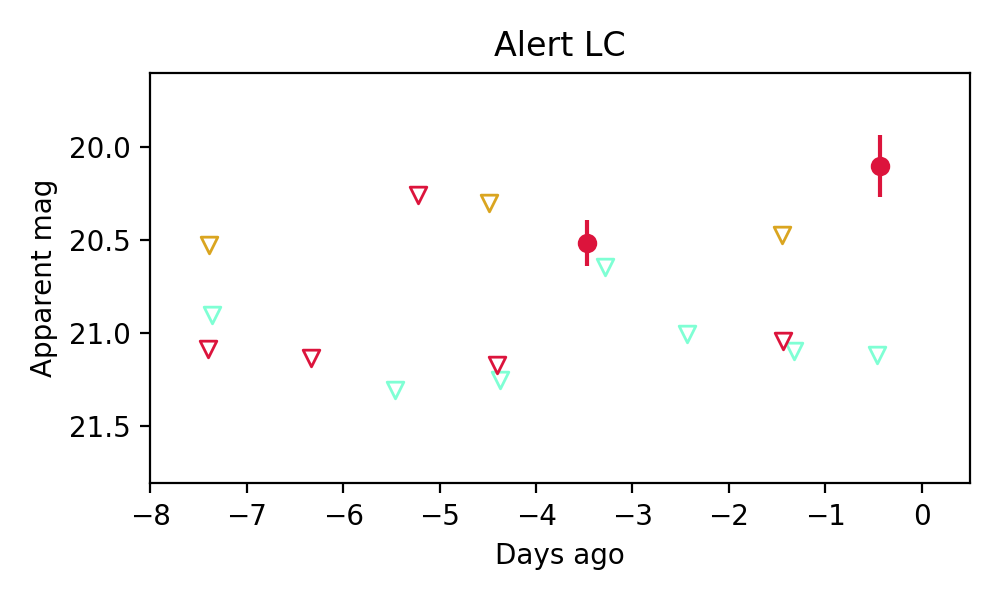
21. ZTF26aapaqbi (Afterglow?) [Back to Top] [Share] [Trigger Swift] [Fritz ] [Lasair ]RA, Dec: 123.63685, 15.51021 8h14m32.84s, 15d30m36.74sGalactic (l, b): 207.72323, 25.22346 WARNING: -4.23 deg from ecliptic plane ext(g-r) = 0.03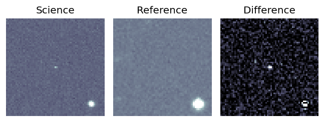
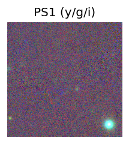
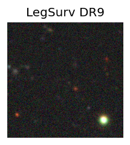
peak abs mag = -23.10 LegacySurvey: 1 sources in 3 arcsec Closest: d = 2.81 arcsec, 231.2 deg (east of north) photoz=0.81 (68% bounds 0.6, 1.08), type=PSF peak abs mag = -23.76 (68% bounds -22.99, -24.55) 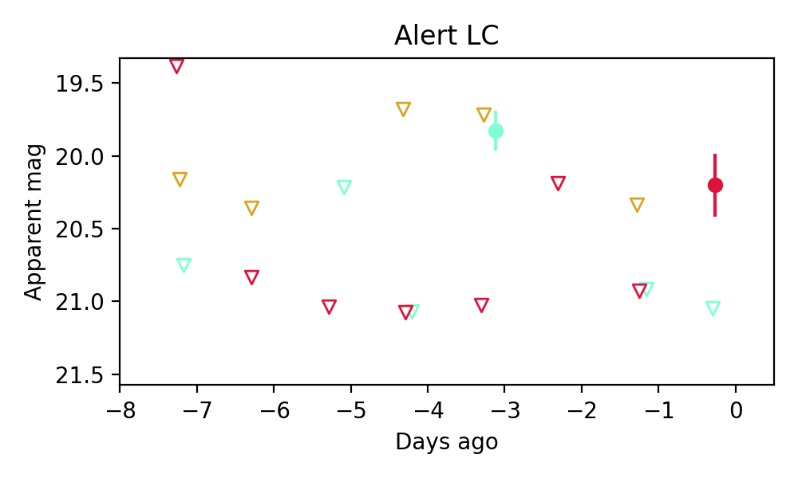
22. ZTF26aaparac (Afterglow?) [Back to Top] [Share] [Trigger Swift] [Fritz ] [Lasair ]RA, Dec: 149.25662, 0.35595 9h57m1.59s, 0d21m21.42sGalactic (l, b): 238.14135, 40.3379 ext(g-r) = 0.034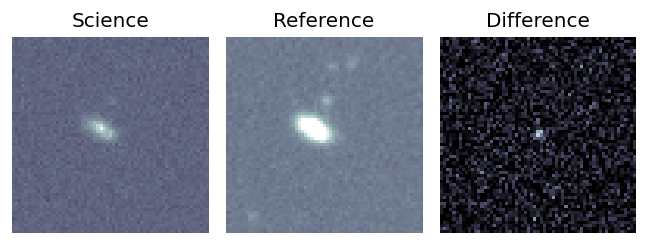
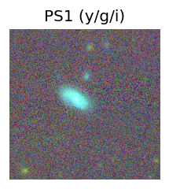
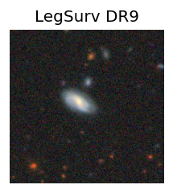
peak abs mag = -17.88 LegacySurvey: 1 sources in 3 arcsec Closest: d = 0.66 arcsec, 354.9 deg (east of north) photoz=0.05 (68% bounds 0.01, 0.16), type=PSF peak abs mag = -16.49 (68% bounds -13.24, -19.28) 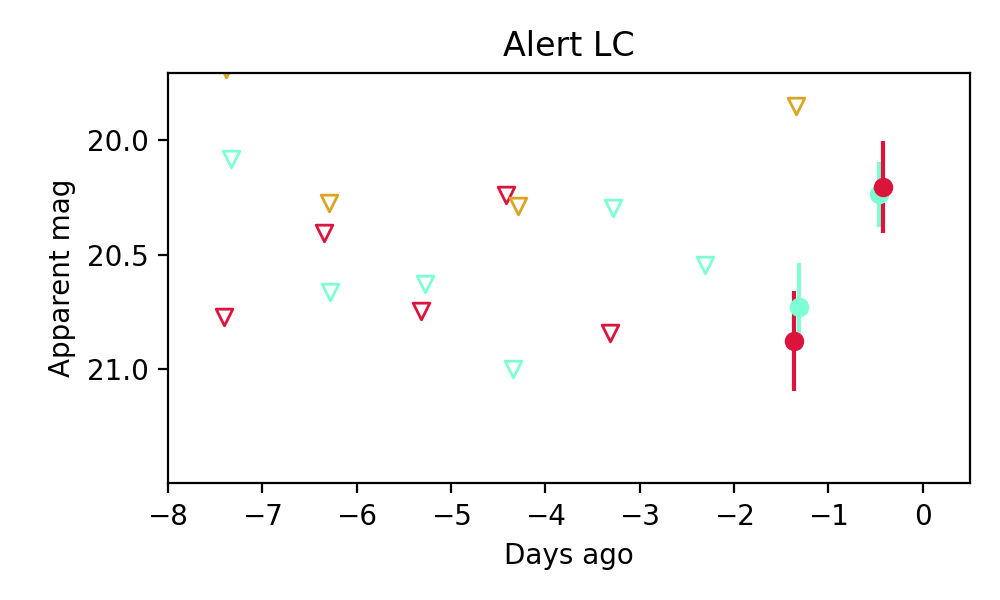
Consistent with synchrotron, g-r>0!
23. ZTF26aapbazr (Afterglow?) [Back to Top] [Share] [Trigger Swift] [Fritz ] [Lasair ]RA, Dec: 155.28655, -20.74338 10h21m8.77s, -20d-44m-36.18sGalactic (l, b): 261.81073, 29.87817 ext(g-r) = 0.076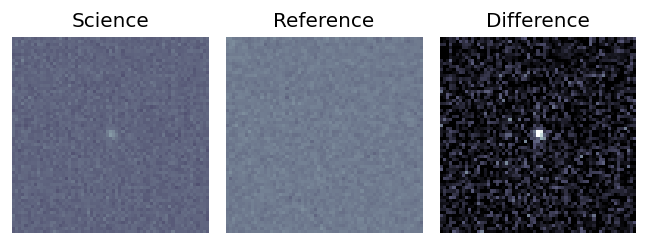
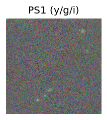
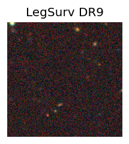
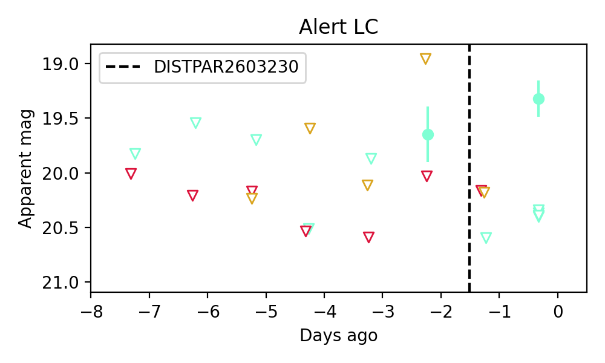
24. ZTF26aapddyn (FBOT?) [Back to Top] [Share] [Trigger Swift] [Fritz ] [Lasair ]RA, Dec: 140.77004, 10.88664 9h23m4.81s, 10d53m11.92sGalactic (l, b): 220.79788, 38.54393 WARNING: -4.23 deg from ecliptic plane ext(g-r) = 0.035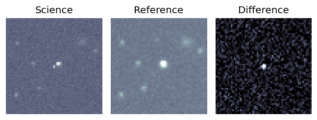
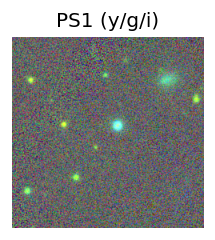
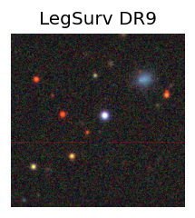
LegacySurvey: 1 sources in 3 arcsec Closest: d = 3.29 arcsec, 303.5 deg (east of north) photoz=0.13 (68% bounds 0.01, 0.2), type=PSF peak abs mag = -19.66 (68% bounds -14.29, -20.66)
25. ZTF26aapdfhn (FBOT?) [Back to Top] [Share] [Trigger Swift] [Fritz ] [Lasair ]RA, Dec: 148.73796, 14.9602 9h54m57.11s, 14d57m36.73sGalactic (l, b): 220.25966, 47.30278 WARNING: 2.14 deg from ecliptic plane ext(g-r) = 0.033LegacySurvey: 1 sources in 3 arcsec Closest: d = 1.04 arcsec, 349.3 deg (east of north) photoz=0.63 (68% bounds 0.55, 0.76), type=EXP peak abs mag = -24.68 (68% bounds -24.32, -25.16)
26. ZTF26aapfpni (FBOT?) [Back to Top] [Share] [Trigger Swift] [Fritz ] [Lasair ]RA, Dec: 163.1876, 21.22733 10h52m45.02s, 21d13m38.38sGalactic (l, b): 218.7568, 62.36484 ext(g-r) = 0.021peak abs mag = -19.34 LegacySurvey: 1 sources in 3 arcsec Closest: d = 0.73 arcsec, 287.5 deg (east of north) photoz=0.16 (68% bounds 0.15, 0.17), type=SER peak abs mag = -19.32 (68% bounds -19.22, -19.44)
27. ZTF26aapgeom (Afterglow?) [Back to Top] [Share] [Trigger Swift] [Fritz ] [Lasair ]RA, Dec: 197.12788, 50.64315 13h 8m30.69s, 50d38m35.36sGalactic (l, b): 116.19879, 66.2613 ext(g-r) = 0.017LegacySurvey: 1 sources in 3 arcsec Closest: d = 3.65 arcsec, 167.7 deg (east of north) photoz=0.03 (68% bounds 0.03, 0.04), type=SER peak abs mag = -16.77 (68% bounds -16.5, -17.31) Consistent with synchrotron, g-r>0!
28. ZTF26aapixwb (FBOT?) [Back to Top] [Share] [Trigger Swift] [Fritz ] [Lasair ]RA, Dec: 224.63945, -15.44863 14h58m33.47s, -15d-26m-55.05sGalactic (l, b): 342.66683, 37.4278 WARNING: 1.43 deg from ecliptic plane ext(g-r) = 0.101PS1: 1 source in 3 arcsec Closest: d = 1.09 arcsec photoz=0.29+/-0.14 peak abs mag = -21.97
29. ZTF26aapjgjx (FBOT?) [Back to Top] [Share] [Trigger Swift] [Fritz ] [Lasair ]RA, Dec: 254.42363, 11.01005 16h57m41.67s, 11d 0m36.18sGalactic (l, b): 30.06938, 30.20355 ext(g-r) = 0.071LegacySurvey: 1 sources in 3 arcsec Closest: d = 1.43 arcsec, 280.1 deg (east of north) photoz=0.44 (68% bounds 0.33, 0.54), type=REX peak abs mag = -22.61 (68% bounds -21.85, -23.16)